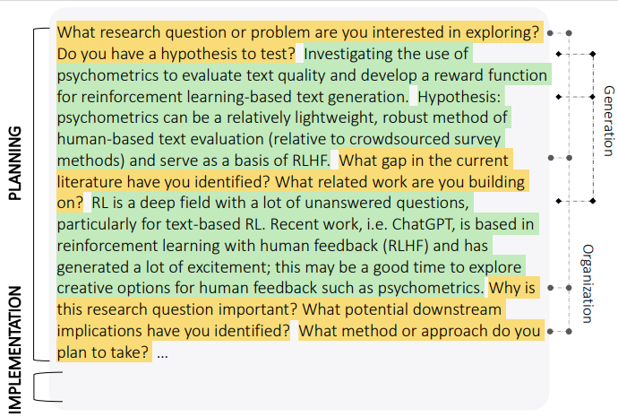
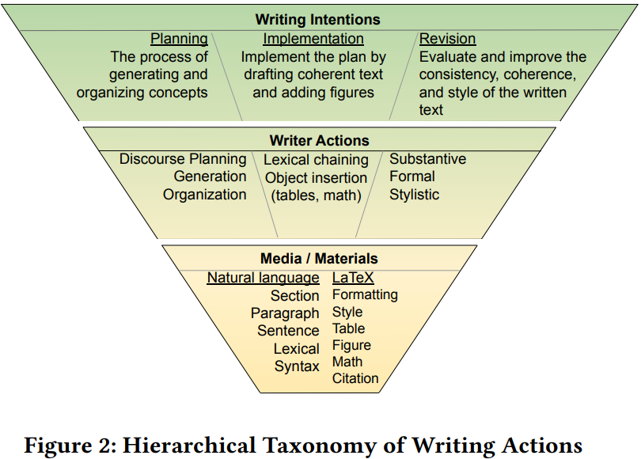
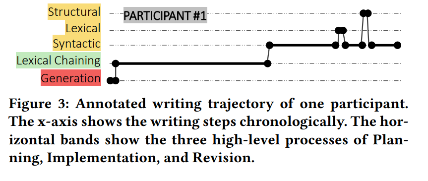

Decoding the End-to-end Writing Trajectory in Scholarly Manuscripts
Ryan Koo*, Anna Martin*, Linghe Wang, Dongyeop Kang (*equal contribution) Visual replay user's writing based on recorded writer actions University of Minnesota-Twin Cities
Abstract
Scholarly writing presents a complex space that generally follows
a methodical procedure to plan and produce both rationally sound
and creative compositions. Recent works involving large language
models (LLM) demonstrate considerable success in text generation
and revision tasks; however, LLMs still struggle to provide struc-
tural and creative feedback on the document level that is crucial
to academic writing. In this paper, we introduce a novel taxonomy
that categorizes scholarly writing behaviors according to intention,
writer actions, and the information types of the written data. We
also provide ManuScript, an original dataset annotated with a
simplified version of our taxonomy to show writer actions and the
intentions behind them. Motivated by cognitive writing theory,
our taxonomy for scientific papers includes three levels of catego-
rization in order to trace the general writing flow and identify the
distinct writer activities embedded within each higher-level process.
ManuScript intends to provide a complete picture of the schol-
arly writing process by capturing the linearity and non-linearity of
writing trajectory, such that writing assistants can provide stronger
feedback and suggestions on an end-to-end level.
Repaly collected writing trajectories
Annotated Sample
An example manuscript with annotations on writing intentions (left) and writing actions (right).
Each horizontal line denotes a single annotation.

Introduction / Background / Motivation
Writing is a cognitively fatiguing task involving continuous decision-
making, heavy use of working memory, and frequent switching be-
tween multiple activities. Scholarly writing is particularly complex
as it requires the author to coordinate many pieces of multiform
information while also meeting the high standards of academic
communication. Flower and Hayes’ [ 6] cognitive process theory of
writing organizes these tasks into three processes: planning, during
which the writer generates and organizes ideas and sets writing goals;
translation, during which the writer implements their plan,
keeping in mind the organization of the text as well as word choice
and phrasing; and reviewing, during which the writer evaluates and
revises their text. Flower and Hayes emphasize that these distinct
phases are non-linear and highly embedded, meaning that any pro-
cess or sub-process can be embedded within any other process and
move back and forth between each process. In order to provide
relevant feedback at each step of the academic writing process, it is
critical for writing assistants to have a strong understanding of the
planning, translation, and revision stages throughout their entirety.
Recent corpora for the study of writing processes exist for each
of these sub-processes. Berdanier [2] demystifies the academic writ-
ing process in a study showing the “linguistic scheme” involving a
distinct planning and crafting procedure typically followed within
technical writing. Furthermore, much work has been done to study
text revision using keystroke data [1 , 3 , 13 ], and revision history
[ 4, 5, 7 , 11 , 12 ]. More recently, Sardo et al. [ 9] have developed a
corpus and a metric for edit-complexity that draws a complex topo-
logical structure of the writer’s efforts throughout the history of
the essay to study the planning and translation processes. Despite
recent advancements in large language models, particularly text
generation, LLMs still exhibit subpar performance for reasoning
capabilities and particularly planning [10 ] to have any significant
impact in aiding the writing process [ 9]. Our work builds upon
these previous studies to provide a dataset with annotations en-
compassing the writing process spanning across all three stages, as
described by Flower and Hayes.
In this paper, we propose a novel dataset ManuScript composed
of writing actions as discrete points annotated according to our
taxonomy to capture the end-to-end writing process. The dataset
consists of several annotated data points following an author's writing trajectory
from the beginning to the end of their draft of an academic manuscript. Since writing
is often non-linear in that it does not occur in a specific order, the writer may jump
back and forth between each phase. Hence, the taxonomy follows a hierarchical structure
encompassing the three phases as (higher-level) coarse-grained labels and finer-grained
annotations embedded within each higher-level process. We plan to extend this work by
scaling the data collection process over a longer period of time to develop a more nuanced
taxonomy of writer actions and intentions.
MANUSCRIPT: A DATASET OF THE
END-TO-END WRITING PROCESS
Analyzing a final manuscript alone is intractable for capturing an
author’s original intentions. Flower and Hayes’s cognitive process
model [6] cannot be applied directly to keystroke data from scholarly writing.
Hence, we have developed an initial taxonomy that can
characterize the finer-grained actions an author takes into distinct
categories but is also general enough to fully capture the author’s
trajectory throughout the entire writing process.
Data Collection
We developed a chrome extension that reverse
engineers Overleaf’s editing history utilizing user keystrokes to
track writing actions in real-time (See details in Appendix A). From
this, we can generate a playback that shows the chronological progression
for each completed writing session. Our initial study involved four
participants in a pilot study where they were prompted
to describe their current or future research plans by responding to
the available prompts or in free form over a thirty-minute writing
session. In total, we collected four writing trajectories, including
46 discontinuous edits with 3290 recorded actions. The detailed
statistics are in Appendix C.
Annotation Schema and result
Inspired by Flower and Hayes’ cognitive
process model, our annotation schema (Figure 2) contains two levels of granularity
in order to accurately reflect the hierarchical and recursive
aspects of the writing process. The higher level includes
Planning, Implementation, and Revision. These labels are used
to denote the general process that the writer is working in. The
lower level categorizations include {idea generation, concept
organization}, {lexical_chaining}, and {syntactic, lexical,
structural} for each of the three processes respectively.
Three of the authors annotated the samples that were gathered. One author annotated sample 1 in the
course of developing the annotation guidelines. Figure 3 illustrates
the writing trajectory of sample 1. Each of the other three
samples was annotated by two different authors such that each
author annotated two samples, and no two samples had the same
pair of annotators.


bibtex citation
@inproceedings{
koo2023decoding,
title={Decoding the End-to-end Writing Process in Scholarly Manuscripts via Writer-action Taxonomy},
author={Ryan Hyunkyo Koo and Anna Martin and Linghe Wang and Dongyeop Kang},
booktitle={The Second Workshop on Intelligent and Interactive Writing Assistants},
year={2023},
url={https://arxiv.org/abs/2304.00121}
}